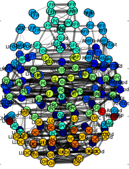

Machine Learning Capabilities of TReNDS Center:
From Neuroimaging to Space
Sergey Plis
Director of Machine Learning Core
Associate Professor at CS Department
A partnership between Georgia State University, Georgia Institute of Technology, and Emory University
Tri-institutional center
- Founded in 2019
- Employ >100 researchers
- Including GRAs from GSU/GT/Emory
- Publishing >120 journal papers a year
- Publishing >100 conference papers a year
- >15 PIs submitting proposals
- ~50 proposals submitted a year
- Annual burn rate ~$7M
TReNDS guiding principles
- From data to knowledge: we use data-driven approaches to inform theory and vice versa
- Creation of new approaches and tools: we draw upon engineering and computer science principles to develop new algorithms to extract the maximal information possible from the available data
- No data left unused: we work to effectively utilize available data to help point us in the right direction for future studies
- Collaboration: we believe a highly collaborative & interdisciplinary environment is necessary to solve the hard problems we are facing today
- Training: dissemination of knowledge is critical to advancing our understanding of the brain
- Application: we desire to apply the approaches to address key challenges
- Translation: We recognize the importance of tech transfer efforts
Partnerships
- GSU
- Psychology, CS, Neuroscience, Physics, Math, Business, Nursing, Public Health
- Undergraduate/graduate training, programs for integrating research and education
- Interdisciplinary imaging hub
- GATech
- ECE, CSE, BME, Psychology
- GTNeuro
- GTRI
- Emory
- Psychiatry, Neurology, Psychology, Radiology
- Brain Health Personalized Medicine Institute
- Markus Autism Center
- Morehouse Medical
- UT Dallas Center for BrainHealth & Brain Performance Institute
- The Mind Research Network
- The Child Mind Institute
- Rutgers University
- Erasmus University
- Martinos Center/MIT
- Hartford Hospital
- Yale University
- Johns Hopkins Medical Institutions
- University of California San Diego
- And many more ...
Outreach (funded by NSF)
- Atlanta Science Festival Exploration Expo exhibitor
- BRAINS! Center for Advanced Brain Imaging open house
- Sponsored the Innovative Methodology and Diversity, Equity, & Inclusion awards at CABI Callosum
- Sponsored the Neuroimaging in Aging Award at the GSU Aging Conference
- Build-A-Brain at Drew Charter School
- Virtual Neuroimaging info session with Q&A
- MIND'S EYE: Student art competition at Drew Charter School
- Atlanta Brain Awareness Campaign participants
- Paideia School CABI field trip
just my tiny team
 3 postdocs, 14 PhD (5 of which recently defended), 5 MS, 4 undergrads, 1 volunteer
3 postdocs, 14 PhD (5 of which recently defended), 5 MS, 4 undergrads, 1 volunteer
Brain Imaging: MRI

Brain Imaging: fMRI
Other data types
- Diffusion tensor imaging
- Magneto Encephalography
- Electro Encephalography
- Genomics data
- Computerized tomography
- and more
Over 200,000 brain scans
Data-driven methods
machine learning
artificial intelligence
Independent Component analysis
Population Analysis
Causal Discovery
Causal timescale $\ne$ Measurement timescale

$\approx100ms$

$???$
$???$

$\approx2s$
Computational resources
| Type | Description |
|---|---|
| 35 dedicated, hi-memory 28 core servers | |
| 36 high memory 64 core AMD CPU servers | |
| 40 v100 GPUs | |
| 32 A100 GPUs | |
| 3.8PB of local storage |
Machine Learning Competencies
- Telecom companies
- Hospitals (mortality rate prediction)
- Insurance claims in health informatics
- Natural language processing
- Embedded AI models
- and more